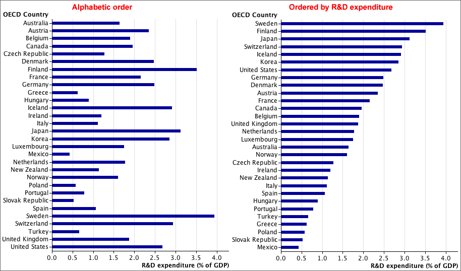

Ordering
Sometimes the categories in a table or bar chart have a natural ordering and the categories should be kept in this order. However when there is no natural ordering of the categories, the order of the categories in a table or bar chart is arbitrary.
Alphabetical ordering of the categories is rarely best.
It is often useful to arrange the categories in decreasing order of their values. This type of ordered bar chart is often called a Pareto diagram.
However if there is a category 'Other' or 'Unknown', then it should be kept at the end, even if its value is larger than others.
Example
